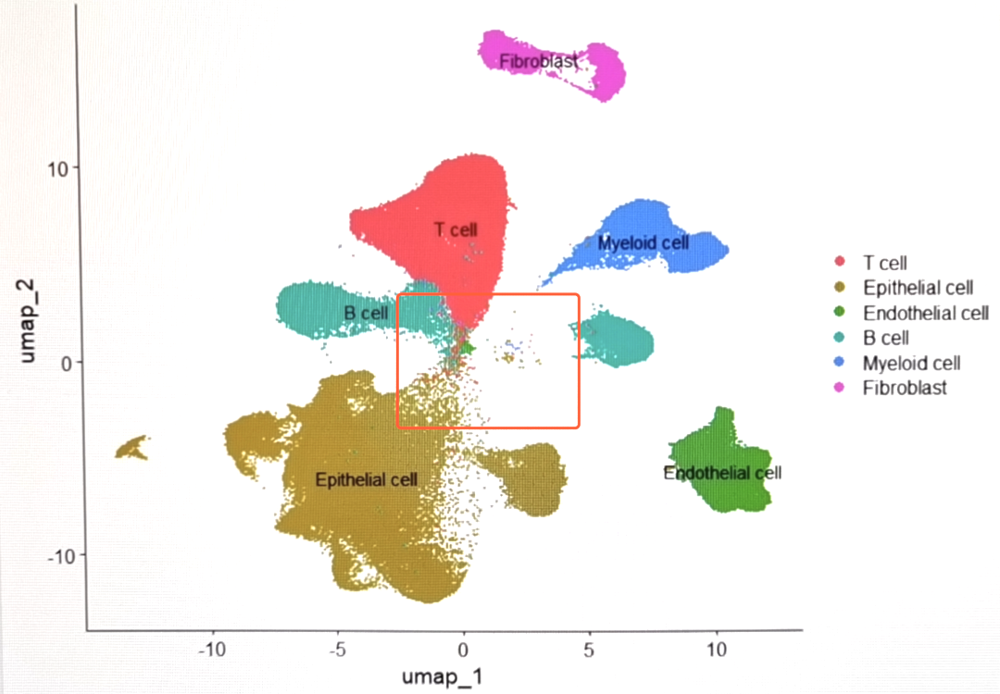
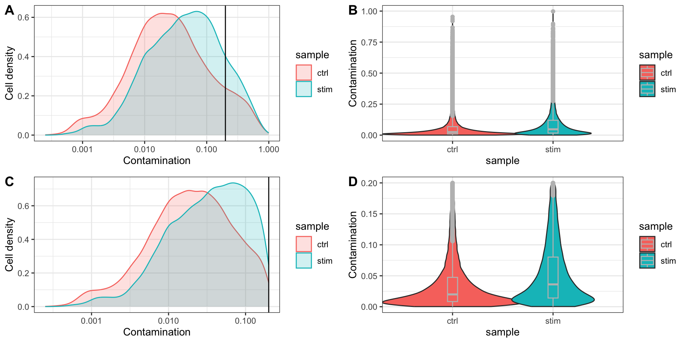
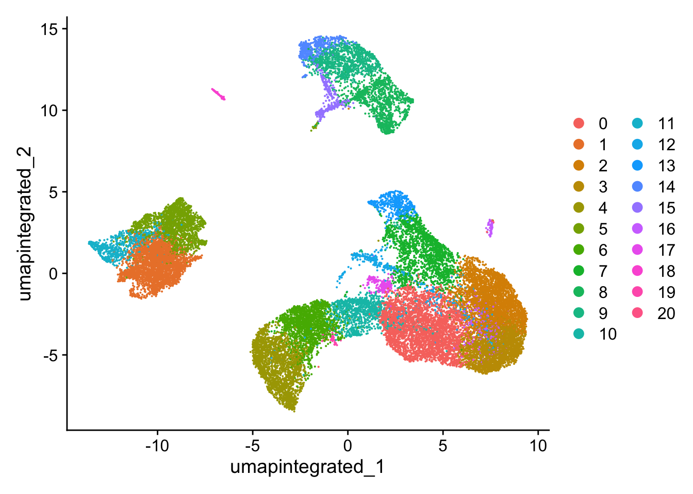
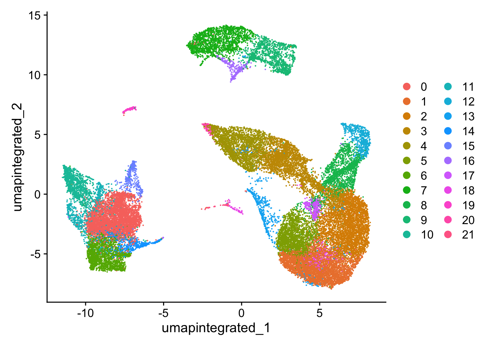
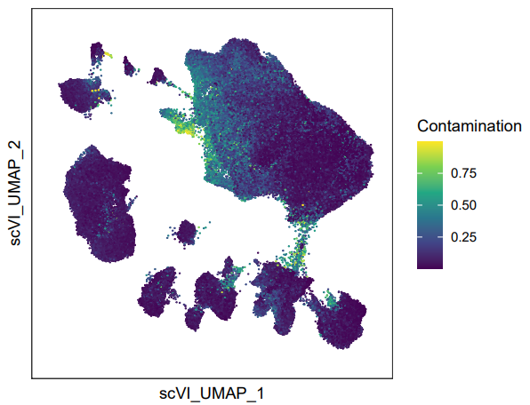

BiocManager::install("decontX")32 预测和去除单细胞转录组的环境游离RNA污染
参考：
使用DecontX预测和去除单细胞转录组的环境游离RNA污染
Decontamination of ambient RNA in single-cell genomic data with DecontX
Note
如果你的UMAP可视化时候总是出现毛毛躁躁的边缘和大量散在细胞，还有很多细胞亚群之间有连续的细胞（maybe可能时真是存在的过渡态细胞），就需要考虑这个使用DecontX预测和去除单细胞转录组的环境游离RNA污染。

In droplet based, single cell RNA-seq experiments, there is always a certain amount of background mRNAs present in the dilution that gets distributed into the droplets with cells and sequenced along with them. The net effect of this is to produce a background contamination that represents expression not from the cell contained within a droplet, but the solution that contained the cells.
在单细胞测序中，由于在处理细胞样品的时候需要用到机械解离或者酶解的步骤，所以免不了会造成细胞的破裂同时产生环境游离RNA。细胞悬液中的环境 RNA 可能会与细胞的原生 mRNA 一起被异常计数，从而导致不同细胞群之间转录本的交叉污染。环境游离RNA污染对细胞测序质量的影响较大，因此，有效地计算和预测游离RNA污染，去除污染严重的低质量细胞对单细胞测序分析具有重要意义。
目前，R包SoupX就可以实现这样的目的，详见：SoupX——去除RNA污染。这篇笔记我们介绍另一个R包decontX(Yang et al. 2020)。这个包的主要优点是使用方便，步骤简便，且结果容易使用。DecontX 是一种新的贝叶斯方法，用于估计和去除单细胞数据中的环境污染，可以整合到 scRNA-seq 工作流中，以改进下游分析。DecontX既可以用于去除单细胞转录组数据中的环境游离RNA污染（decontX），也可以用于单细胞蛋白表达谱中的污染（deconPro）。
安装SoupX：
32.1 加载包
32.2 数据导入/质控
DecontX can take either a SingleCellExperiment object or a counts matrix as input. decontX will attempt to convert any input matrix to class dgCMatrix from package Matrix before starting the analysis. 在Seurat工作流中，评估并去除环境游离RNA的污染一般在质控之后进行。这里我们用 Chapter 20 中已经完成质控的Seurat对象作为演示。最后和 Chapter 25 中没有进行环境游离RNA去除的细胞分群结果进行比较。
filtered_seurat <- readRDS("output/scRNA-seq_online/seurat_filtered.rds")
filtered_seuratAn object of class Seurat
14065 features across 29629 samples within 1 assay
Active assay: RNA (14065 features, 0 variable features)
1 layer present: countshead(filtered_seurat, 5) orig.ident nCount_RNA nFeature_RNA sample
ctrl_AAACATACAATGCC-1 1 2344 874 ctrl
ctrl_AAACATACATTTCC-1 1 3125 896 ctrl
ctrl_AAACATACCAGAAA-1 1 2578 725 ctrl
ctrl_AAACATACCAGCTA-1 1 3261 979 ctrl
ctrl_AAACATACCATGCA-1 1 746 362 ctrl
log10GenesPerUMI mitoRatio cells
ctrl_AAACATACAATGCC-1 0.8728630 0.01962457 ctrl_AAACATACAATGCC-1
ctrl_AAACATACATTTCC-1 0.8447596 0.01792000 ctrl_AAACATACATTTCC-1
ctrl_AAACATACCAGAAA-1 0.8384933 0.01551590 ctrl_AAACATACCAGAAA-1
ctrl_AAACATACCAGCTA-1 0.8512622 0.01379945 ctrl_AAACATACCAGCTA-1
ctrl_AAACATACCATGCA-1 0.8906861 0.02144772 ctrl_AAACATACCATGCA-1
32.3 执行decontX
In this scenario, decontX will estimate the contamination distribution for each cell cluster based on the profiles of the other cell clusters in the filtered dataset. The estimated contamination results can be found in the colData(sce)$decontX_contamination and the decontaminated counts can be accessed with decontXcounts(sce).
decontx_result <- decontX(filtered_seurat[["RNA"]]$counts)
# 提取环境RNA污染的预测结果
decontx_result$contamination[1:5][1] 0.0005892543 0.0642801956 0.0057000246 0.1023643666 0.2893165532length(decontx_result$contamination)[1] 29629summary(decontx_result$contamination) Min. 1st Qu. Median Mean 3rd Qu. Max.
0.0002503 0.0120741 0.0336210 0.0833928 0.0955089 0.9974462 可以看到每个细胞都有一个decontx_result$contamination结果，即预测的环境游离RNA的比例。因此，接下来我们可以将其直接写入Seurat对象的meta.data中，并根据这一信息进行细胞过滤。
# 将环境RNA污染的预测结果写入Seurat对象的meta.data中
filtered_seurat$Contamination <- decontx_result$contamination
head(filtered_seurat, 5) orig.ident nCount_RNA nFeature_RNA sample
ctrl_AAACATACAATGCC-1 1 2344 874 ctrl
ctrl_AAACATACATTTCC-1 1 3125 896 ctrl
ctrl_AAACATACCAGAAA-1 1 2578 725 ctrl
ctrl_AAACATACCAGCTA-1 1 3261 979 ctrl
ctrl_AAACATACCATGCA-1 1 746 362 ctrl
log10GenesPerUMI mitoRatio cells
ctrl_AAACATACAATGCC-1 0.8728630 0.01962457 ctrl_AAACATACAATGCC-1
ctrl_AAACATACATTTCC-1 0.8447596 0.01792000 ctrl_AAACATACATTTCC-1
ctrl_AAACATACCAGAAA-1 0.8384933 0.01551590 ctrl_AAACATACCAGAAA-1
ctrl_AAACATACCAGCTA-1 0.8512622 0.01379945 ctrl_AAACATACCAGCTA-1
ctrl_AAACATACCATGCA-1 0.8906861 0.02144772 ctrl_AAACATACCATGCA-1
Contamination
ctrl_AAACATACAATGCC-1 0.0005892543
ctrl_AAACATACATTTCC-1 0.0642801956
ctrl_AAACATACCAGAAA-1 0.0057000246
ctrl_AAACATACCAGCTA-1 0.1023643666
ctrl_AAACATACCATGCA-1 0.2893165532绘图展示污染率的分布情况
p1 <- filtered_seurat@meta.data |>
ggplot(aes(color = sample, x = Contamination, fill = sample)) +
geom_density(alpha = 0.2) +
scale_x_log10() +
ylab("Cell density") +
geom_vline(xintercept = 0.2) +
theme_bw()
p2 <- filtered_seurat@meta.data |>
ggplot(aes(x = sample, y = Contamination, fill = sample)) +
geom_violin(width = 1.4) +
geom_boxplot(width = 0.1, color = "gray") +
theme_bw()32.4 过滤高环境RNA污染的细胞
对于污染率的过滤标准，DecontX官方并没有给予明确的建议，这里参考的了SoupX的官方文档，选择Contamination < 0.2。
low_con_seurat <- subset(filtered_seurat, Contamination < 0.2)
paste0("通过decontX过滤掉了", ncol(filtered_seurat) - ncol(low_con_seurat), "个细胞")[1] "通过decontX过滤掉了3574个细胞"重新评估污染率的分布情况
p3 <- low_con_seurat@meta.data |>
ggplot(aes(color = sample, x = Contamination, fill = sample)) +
geom_density(alpha = 0.2) +
scale_x_log10() +
ylab("Cell density") +
geom_vline(xintercept = 0.2) +
theme_bw()
p4 <- low_con_seurat@meta.data |>
ggplot(aes(x = sample, y = Contamination, fill = sample)) +
geom_violin(width = 1.4) +
geom_boxplot(width = 0.1, color = "gray") +
theme_bw()
plot_grid(p1, p2, p3, p4,
ncol = 2,
labels = "AUTO")
32.5 SCTranform、整合
这里省略细胞周期、线粒体基因等非期望变异来源的评估，省略整合前细胞分群情况的评估。
# 分割layer，执行SCTranform
low_con_seurat[["RNA"]] <- split(low_con_seurat[["RNA"]],
f = low_con_seurat$sample)
low_con_seuratAn object of class Seurat
14065 features across 26055 samples within 1 assay
Active assay: RNA (14065 features, 0 variable features)
2 layers present: counts.ctrl, counts.stim# SCTranform
low_con_seurat <- SCTransform(
low_con_seurat,
vars.to.regress = c("mitoRatio"),
verbose = FALSE
)
low_con_seuratAn object of class Seurat
28044 features across 26055 samples within 2 assays
Active assay: SCT (13979 features, 3000 variable features)
3 layers present: counts, data, scale.data
1 other assay present: RNA[1] "pca"# 整合
seurat_integrated <- IntegrateLayers(
object = low_con_seurat,
method = CCAIntegration,
normalization.method = "SCT",
orig.reduction = "pca",
verbose = FALSE
); beep()
# 整合后重新合并RNA layer
seurat_integrated[["RNA"]] <- JoinLayers(seurat_integrated[["RNA"]])
# 查看整合后的降维信息
names(seurat_integrated@reductions)[1] "pca" "integrated.dr"32.6 非线性降维、分群
# Set seed
set.seed(123456)
# Run UMAP
seurat_integrated <- RunUMAP(
seurat_integrated,
dims = 1:40,
reduction = "integrated.dr", # 更改降维来源为整合后的"integrated.dr"
reduction.name = "umap.integrated"
)
# 分群
seurat_integrated <- FindNeighbors(
seurat_integrated,
dims = 1:40,
reduction = "integrated.dr"
)
seurat_integrated <- FindClusters(
seurat_integrated,
resolution = 0.8 # 这里省略探索分辨率的步骤，为了和此前的章节一致，将分辨率设为0.8
)Modularity Optimizer version 1.3.0 by Ludo Waltman and Nees Jan van Eck
Number of nodes: 26055
Number of edges: 985955
Running Louvain algorithm...
Maximum modularity in 10 random starts: 0.8805
Number of communities: 21
Elapsed time: 5 secondshead(seurat_integrated, 5) orig.ident nCount_RNA nFeature_RNA sample
ctrl_AAACATACAATGCC-1 1 2344 874 ctrl
ctrl_AAACATACATTTCC-1 1 3125 896 ctrl
ctrl_AAACATACCAGAAA-1 1 2578 725 ctrl
ctrl_AAACATACCAGCTA-1 1 3261 979 ctrl
ctrl_AAACATACCTCGCT-1 1 3519 866 ctrl
log10GenesPerUMI mitoRatio cells
ctrl_AAACATACAATGCC-1 0.8728630 0.01962457 ctrl_AAACATACAATGCC-1
ctrl_AAACATACATTTCC-1 0.8447596 0.01792000 ctrl_AAACATACATTTCC-1
ctrl_AAACATACCAGAAA-1 0.8384933 0.01551590 ctrl_AAACATACCAGAAA-1
ctrl_AAACATACCAGCTA-1 0.8512622 0.01379945 ctrl_AAACATACCAGCTA-1
ctrl_AAACATACCTCGCT-1 0.8283053 0.01392441 ctrl_AAACATACCTCGCT-1
Contamination nCount_SCT nFeature_SCT SCT_snn_res.0.8
ctrl_AAACATACAATGCC-1 0.0005892543 1541 856 2
ctrl_AAACATACATTTCC-1 0.0642801956 1489 697 1
ctrl_AAACATACCAGAAA-1 0.0057000246 1519 662 5
ctrl_AAACATACCAGCTA-1 0.1023643666 1497 724 5
ctrl_AAACATACCTCGCT-1 0.0036639072 1411 573 1
seurat_clusters
ctrl_AAACATACAATGCC-1 2
ctrl_AAACATACATTTCC-1 1
ctrl_AAACATACCAGAAA-1 5
ctrl_AAACATACCAGCTA-1 5
ctrl_AAACATACCTCGCT-1 1# Assign identity of clusters
Idents(seurat_integrated) <- "SCT_snn_res.0.8"
table(Idents(seurat_integrated))
0 1 2 3 4 5 6 7 8 9 10 11 12 13 14 15
3525 3062 3034 2321 2203 1888 1775 1707 1181 1076 1074 701 489 464 460 336
16 17 18 19 20
330 248 109 46 26 # Plot the UMAP
DimPlot(seurat_integrated,
reduction = "umap.integrated",
label = FALSE,
label.size = 6)
可以看到和来自 Chapter 25 （下图）的分群情况相比，去除了高环境RNA污染的细胞后，细胞群边缘的毛刺有所减少，细胞界线更加清晰。

Tip
decontX可以整合进标准的Seurat工作流中的质控步骤中。但是，也可以在先不进行decontX的情况下，进行常规的整合、降维、分群。如果分群效果不理想，即有明显的边缘毛躁和大量散在细胞的情况，可以再提取这时候的counts，执行decontX。这时候可以通过FeaturePlot()去可视化高游离RNA污染的细胞的分布情况：
FeaturePlot(
seurat_integrated,
features = "Contamination",
raster = FALSE # 细胞过多时候需要加这个参数
) +
scale_color_viridis_c() +
theme_bw() +
theme(
panel.grid = element_blank(),
axis.text = element_blank(),
axis.ticks = element_blank()
) +
xlab("scVI_UMAP_1") +
ylab("scVI_UMAP_2")
FeaturePlot()可视化游离RNA分布情况的示例。可以看到，通过可视化Contamination，这些边缘的毛躁就是Contamination较高地细胞。然后选择合适的阈值过滤细胞。之后用过滤后的counts和meta.data重新构建Seurat对象：
low_con_seurat <- subset(filtered_seurat, Contamination < 0.2)
new_seurat <- CreateSeuratObject(
counts = low_con_seurat[["RNA"]]$counts,
meta.data = low_con_seurat@meta.data)然后重新执行整合、降维、分群等步骤。最后和此前的细胞分群情况进行比较。
```{r}
#| eval: false
#| fig-width: 10
#| fig-cap: 过滤环境RNA污染前（A）后（B）的UMAP图
p2 <- DimPlot(
low_con_seurat,
reduction = "umap",
label = T
)
p2
plot_grid(
p1, p2,
labels = "AUTO")
```